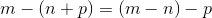
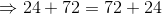
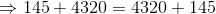

Adunarea și scăderea numerelor naturale
Adunarea a două numere naturale
Definiția NN8: Suma a două numere naturale
Definim următoarele noțiuni:
- Se numește suma a două numere naturale oarecare
 și
și  unicul numărul natural
unicul numărul natural  , notat
, notat  .
. - Numerele și se numesc termenii sumei.
- Operația prin care se determină suma a două numere naturale se numește adunarea numerelor naturale.
Observații:
- Operația prin care se determină suma a două numere naturale se numește adunare.
- Pentru a aduna două numere naturale, se adună cifrele corespunzătoare aceluiași ordin.
- Adunarea cifrelor se face de la dreapta la stânga.
- Dacă la adunarea a două cifre, obținem un număr mai mare decât
 , înseamnă că avem o trecere peste ordin.
, înseamnă că avem o trecere peste ordin. - A doua cifră a numărului obținut prin adunare se trece la același ordin pe care îl au cifrele adunate inițial, iar prima cifră se adună la suma cifrelor din ordinul următor ș.a.m.d.
- Pentru ușurința calculelor, se așează numerele unul sub celălalt, ordin sub ordin.
Proprietățile adunării numerelor naturale
Propoziția NN9: Proprietăți
Fie  și
și  numere naturale oarecare. Proprietățile adunării numerelor naturale sunt:
numere naturale oarecare. Proprietățile adunării numerelor naturale sunt:
- comutativitatea: ;
- asociativitatea: ;
- existența elementui neutru:
 (adunând un număr natural cu
(adunând un număr natural cu  obținem același număr);
obținem același număr); - dacă , atunci
 ;
; - dacă
 , atunci ;
, atunci ; - dacă , atunci
 ;
; - dacă și
 , atunci ;
, atunci ; - dacă și , atunci
 .
.
Observație:
Proprietățile de mai sus se aplică și pentru suma mai multor numere naturale.
Scădea a două numere naturale
Definiția NN10: Diferența a două numere naturale
- Se numește diferența a două numere naturale oarecare și , cu unicul număr natural notat
 .
. - Numărul se numește descăzut, iar numărul se numește scăzător.
- Operația prin care se determină diferența a două numere naturale se numește scădere.
Observații:
- Pentru a efectua scăderea a două numere, se scad cifrele corespunzătoare aceluiași ordin.
- Pentru ușurința calculelor, se așează numerele unul sub celălalt, ordin sub ordin.
- Este posibil ca la scăderea a două cifre, cifra din care se scade să fie mai mică decât cifra care trebuie scăzută. În acest caz, împrumutăm o zece dintr-un ordin superior. Din aceasta, scădem cifra care trebuia scăzută, iar restul se adună la cifra din care trebuia să scădem. Când trecem la ordinul următor să efectuăm scăderea, nu trebuie să uităm că de acolo am luat o zece, deci cifrele din care scădem vor fi mai mici cu
 decât cele inițiale.
decât cele inițiale.
Proprietățile scăderii numerelor naturale
Propoziția NN11: Proprietățile scăderii numerelor naturale
Fie numere naturale oarecare.
- diferența numerelor și are sens doar pentru : nu putem dintr-un număr mai mic să scădem un număr mai are;
- ;
 ;
; ;
;- dacă , atunci ;
- dacă , atunci
 ;
; - scăderea nu este comutativă;
- scăderea nu este asociativă;
- scăderea nu are element neutru.
Observație:
Putem spune că adunarea și scăderea sunt operații inverse.
Propoziția NN12: Suma primelor n numere naturale nenule
Primele numere naturale nenule, deci fără sunt:  .
.
Suma primelor numere naturale nenule este:
În continuare vei vedea câteva exemple care ilustrează proprietățile adunării și scăderii numerelor naturale, dar și exerciții în care aplicăm formula pentru aflarea sumei primelor numere naturale nenule.
Adunarea numerelor naturale - exemple
- Suma numerelor
 și
și  este:
este:  .
.
Cifrele și  corespund ordinului unităților.
corespund ordinului unităților.
Adunând și , obținem  .
.
Cifra  se va trece la ordinul unităților în rezultatul sumei, iar cifra se adună la suma cifrelor din ordinul următor, adică a cifrelor
se va trece la ordinul unităților în rezultatul sumei, iar cifra se adună la suma cifrelor din ordinul următor, adică a cifrelor  și .
și .
Punând numerele unul sub celălalt, obținem:

- Suma numerelor și
 este
este  .
.
La ordinul zecilor, am adunat  cu .
cu .
Știm că  unități de un anumit ordin formează o unitate de ordin superior.
unități de un anumit ordin formează o unitate de ordin superior.
Astfel, adunând cele două cifre din ordinul unităților ( ), obținem o unitate de ordinul zecilor, care se va adăuga sumei cifrelor
), obținem o unitate de ordinul zecilor, care se va adăuga sumei cifrelor  cu .
cu .
Astfel, vom obține cifra la ordinul zecilor.
- Suma numerelor
 , și
, și  este:
este:

- Folosind proprietatea de comutativitate a adunării numerelor naturale, avem:



.
- Folosind proprietatea de asociativitate a adunării numerelor naturale, avem:


- Arătăm, printr-un exemplu, că este elementul neutru al adunării numerelor naturale.


- Fie .

- Fie
 .
.
- Fie și
 .
.

- Fie și .

- Suma numerelor este:
Ultimul număr din șir se înmulțește cu succesorul său, iar rezultatul înmulțirii se împarte la .
Deci suma numerelor primelor  de numere naturale este .
de numere naturale este .
- Suma numerelor
 este:
este:
Asemenea exemplului anterior, aplicăm formula pentru calcularea sumei primelor numere naturale nenule, unde, în acest caz,  .
.
Deci suma primelor  numere naturale nenule este
numere naturale nenule este  .
.
Scăderea numerelor naturale - exemple
- Diferența numerelor și
 este:
este:

Scăderea se face de la dreapta la stânga.
Din cifra scădem și obținem .
Din scădem și obținem tot .
Din scădem și obținem .
Din scădem și obținem .
Rezultatul scăderii este  .
.
- Diferența numerelor
 și este:
și este:

Pornim de la dreapta.
Nu putem efectua  , deci, împrumutăm o zece din ordinul următor.
, deci, împrumutăm o zece din ordinul următor.
Vom face  , rezultat pe care îl adunăm la și obținem . Deci, cifra unităților este .
, rezultat pe care îl adunăm la și obținem . Deci, cifra unităților este .
Împrumutând o zece din ordinul zecilor, nu vom mai avea două zeci, ci doar una, deci la scădere vom avea  , imposibil în mulțimea numerelor naturale.
, imposibil în mulțimea numerelor naturale.
Împrumutăm din ordinul următor o zece, deci, la ordinul sutelor ne rămâne .
Avem , rezultat pe care îl adunăm cu , zecea rămasă de la primul împrumut. Obținem .
Din scădem și obținem .
Din de la ordinul miilor scădem și obținem .
Cum scăzătorul nu are cifră de ordinul zecilor de mii, cifra de la descăzut se coboară la rezultat.
Deci, diferența celor două numere este  .
.
- Diferența numerelor
 și este:
și este:

Observăm că până la ordinul sutelor de mii, fiecare cifră este .
Pentru a efectua scăderea cifrelor de ordinul unităților, împrumutăm o zece din ordinul următor.
Deci . Vom trece cifra la unități.
Pentru a efectua scăderea cifrelor de ordinul zecilor, împrumutăm o zece din ordinul următor, dar, fiindcă am luat o zece de aici mai devreme, rămânem cu .
Deci  .
.
Mai departe, împrumutăm din nou o zece pentru a efectua diferența cifrelor de ordinul sutelor.
Din nou, mai devreme am împrumutat și de aici o zece, ceea ce înseamnă că ne rămâne .
Deci, avem .
Procedăm la fel pentru cifrele de ordinul unităților de mii. Pentru că și de aici am împrumutat mai devreme, vom face diferența dintre și ; deci, obținem .
Pentru ordinul zecilor de mii, împrumutăm o zece din ordinul superior.
Și pentru ordinul zecilor de mii am împrumutat mai devreme, deci vom face diferența dintre și , obținând .
Cum din ordinul sutelor de mii am împrumutat o zece, vom face diferența dintre și ; astfel, vom obține .
Numărul rezultat este  .
.
- Dispunem de suma de
 Ron și dorim să cumpărăm o bicicletă care costă Ron. Aceasta înseamnă ca din suma noastră de Ron, să scădem costul bicicletei, Ron, ceea ce este imposibil, deoarece avem mai puțini bani decât ar trebui.
Ron și dorim să cumpărăm o bicicletă care costă Ron. Aceasta înseamnă ca din suma noastră de Ron, să scădem costul bicicletei, Ron, ceea ce este imposibil, deoarece avem mai puțini bani decât ar trebui.
Deci  nu se poate efectua.
nu se poate efectua.
- Bugetul lunar al unei familii cu persoane este de
 Ron. Din acesta, se scad cheltuielile casei (mâncare, apă, curent etc) care costă Ron pe lună.
Ron. Din acesta, se scad cheltuielile casei (mâncare, apă, curent etc) care costă Ron pe lună.
Acestora le mai rămâne, în fiecare lună, pentru alte cheltuieli neprevăzute:
Luna aceasta, cheltuielile neprevăzute au costat  Ron, ceea ce înseamnă că familia respectivă a reușit să economisească:
Ron, ceea ce înseamnă că familia respectivă a reușit să economisească:

O excursie în weekend la Brașov costă  Ron.
Ron.
Este posibil ca familia să meargă în excursie luna aceasta?
Răspunsul este nu, deoarece aceștia dispun de  Ron, din care ar trebui să scadă costul excursie, care este mai mare decât economiile lor.
Ron, din care ar trebui să scadă costul excursie, care este mai mare decât economiile lor.
 nu se poate efectua.
nu se poate efectua.
- Aplicăm proprietățile scăderii numerelor naturale, astfel:
- Verificăm dacă
 .
.

- Verificăm dacă .

- Verificăm dacă
 .
.
- Verificăm dacă
 .
.

- Verificăm dacă
 , pentru .
, pentru .
- Cum
 , evident
, evident  , adică .
, adică . - Fie

- Fie

- Deoarece descăzutul nu poate fi mai mic decât scăzătorul, avem:
;